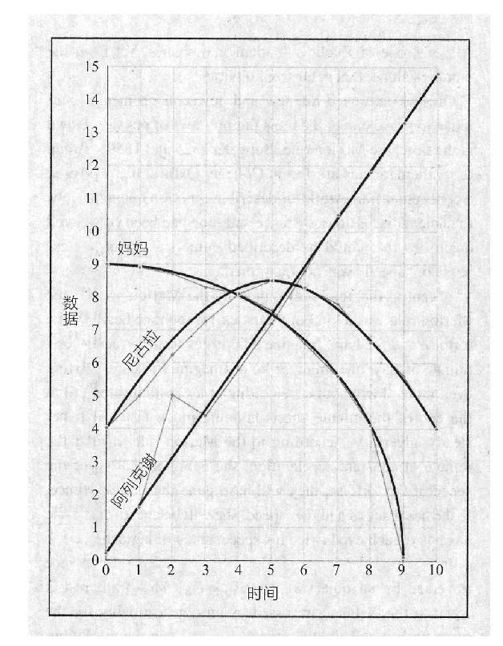
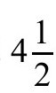
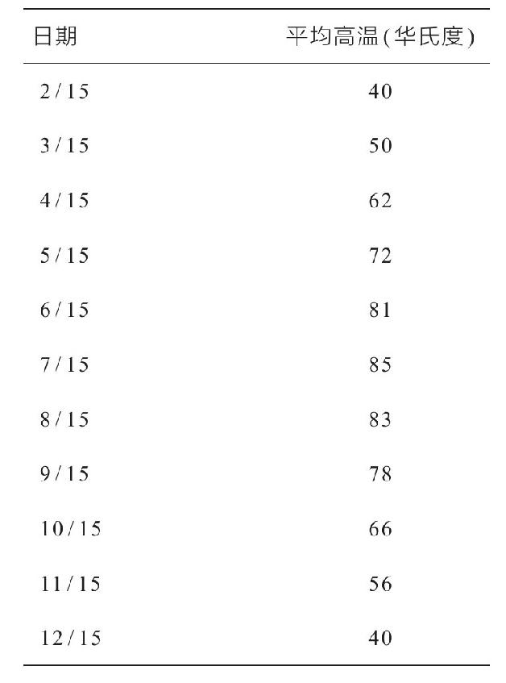

我们是如何知道自己所处的位置的？在认识到空间本身存在之后，这可能是下一个很自然的问题。也许制图学，也就是研究地图的学问，可以提供答案。但制图学只是个开始。为了得到关于位置描述的一个合适理论，将会产生更深刻的陈述，远远胜过“寻找卡拉马祖，看F 3区域”这样的话。
关于位置，除了命名一个地点之外，还有更重要的事情。想象一下外星使者在地球上降落的情景，他们或许是靠氧气生存的有黏性的泡泡头生物，或者可能是一种多毛的、类似于类人猿的个体，喜欢吸一氧化二氮。想要交流的话，如果外星人带了一本字典就好了。但这就足够了吗？如果好的交流就是说“我是塔赞你是简”，也许可以。但是为了交换这穿越星际间的想法，我们还得互相学习对方的语法。
在数学方面也是如此，所谓“字典”——用来命名平面、空间、球面上的点的系统——只是一个开始。关于位置理论的真正力量在于能够将不同的位置、路径和形状相互联系起来，并能用方程来描述它们——这是几何和代数的统一。
今天，就像一本老式教科书说的那样，1“只需很少的努力，学生们就可以得到并掌握这些数学工具。”很难想象，如果伟大的天文学家/物理学家开普勒和伽利略熟悉解析几何工具，他们是否会创造出更伟大的理论，可他们并不知道这些工具。而有了这些数学工具后，他们的继任者牛顿和莱布尼茨创造了微积分和现代物理学。如果代数和几何没有统一，就不会有现代物理学和工程学的那么多进步。
就像证明是一场革命一样，随着地图的发明，第一个路标出现于古希腊时代。尽管希腊人有许多特殊天赋，但希腊文明的终结导致代数和几何的统一未能完成，这种潜在的可能性也消失了。接下来的一步是图形的发明，但这是在黑暗时代之后知识传统的复兴之后的事情了。最后，这场革命持续了十几个世纪，塑造了一批伟大的希腊数学家和制图师。
没人知道谁制作了第一幅地图，也不知道制作时间和原因。我们只知道已知最早的地图能够制作出来，2是因为埃及人发明了几何学。这些地图，简单的黏土片，可以追溯到公元前2300年。上面刻着的不是地形关键点或宗教装饰，而是财产税记录。公元前2000年，在埃及和巴比伦，房地产地图记录了诸如财产概要和所有者的信息。我们可以想象，一个戴着宝石的美索不达米亚女人，神情有点紧张，指着手中的黏土片上面的一个点，用古老的语言庄严地唱着：“位置，位置，位置。”
越来越多的勇敢的灵魂开始探索七大洋，一个更重要的目标是为了创造地图。早在1915年，沙克尔顿爵士的船，叫坚忍号（The Endurance），被南极的冬天所困，对船员来说，最大的危险不是来自每小时近300千米的风和——37摄氏度的温度，而是找不到返回的路。纵观历史，情况一直如此。在辽阔的公海上，海员和探险家面临的最严峻的挑战是不迷路。假设你被困在一个没有参考信息显示你身在何方的地方，除了一个收发无线电的设备外没有任何导航工具，你只能呼叫寻求帮助，却无法告诉救援人员你所在的方位。
我们今天用来描述地球表面上的某个位置的两个坐标是经度和纬度，在你的心里想象3个点、两条线和1个球体。这个球体代表地球。接着，把3个点这样放置：一个点固定在地球北极，一个点放在地球中心，第三个点放在地球表面的某个地方。用你的第一条线将地球北极与地球中心两点连接。这是地球的自转轴。用另一条线将地球中心与表面一点相连。这条线将与第一条线成一个夹角。该夹角决定了这个点的纬度。
纬度的最初概念起源于古代气象学家亚里士多德。在研究地球上的位置如何影响气候后，他建议将地球划分成5个由北/南位置限定的气候区。这些区域最终被画在地图上，由恒定的纬线隔开。正如亚里士多德的理论指出的那样，你可以通过气候，至少在平均意义上定出你的纬度。地球在两极地区是最冷的，当你向赤道移动时，气候就会变暖。当然，在一些特定的日子，斯德哥尔摩可能比巴塞罗那更温暖，所以除非你愿意在一段时间内进行测量，否则这种方法是没有用的。确定纬度的更好方法是看星星。如果你在地球自转轴线上找到一颗恒星，这就特别简单了。在北半球有这样一颗恒星——北极星。北极星并不是一直以来都指向北极3，因为地球的轴线不是精确地固定在星星上，而是沿着26000年一个周期的小锥体轨迹进动。古埃及的一些大金字塔有一些通道排列在天龙座α星的方向上，当它们建成时，天龙座α星成了北极星。古希腊人也曾有过这样的经历：在他们的时期里，没有真正的北极星。
大约一万年前，在北半球很容易找到北极星。它就是织女星，是北方夜空中最亮的一颗星。
如果你朝北能同时看到北极星和地平线，那么简单的几何学可以证明，你到北极星和你到地平线之间的夹角就是你所在的纬度。这种关系仅仅是近似的，因为它假设北极星恰好位于地球的轴线上，而地球的半径和北极星与地球的距离相比是可以忽略的，这两者都是良好但不完全准确的假设。1700年，艾萨克·牛顿发明了六分仪，这是一种用来减少目视测量纬度误差的装置。当然，被困的旅行者可以用传统的方式来做，但是，用两根棍子作为量角器来确定经度更困难。在你的脑海里再加上一个比地球大得多的球体，它的中心是地球。在这个球体上画上星星，就成了一幅星空图。如果地球没有自转，你可以参照这张星空图来测量经度。然而，地球自转的影响是，你这一刻看到的星空图将是站在你西方一小段距离的人即将看到的星空图。准确地说，由于地球在24小时内旋转了360度，所以一个在你西方15度的观察者在一个小时后会看到你这一刻看到的同样的景象。在赤道地区，这一距离大约有1000英里。比较两个在同一纬度拍摄的恒星快照，如果没有时间戳，也不能得到经度的信息。另一方面，如果你比较另一个人在同一纬度同一夜晚同一时间的星空快照，你就可以确定你们在经度上的差异。即便如此，你也需要一个时钟。
直到18世纪，时钟才能够经受住运动和温度的变化，以及船只在海上航行时含盐水汽的影响，仍然保持足够精确，以便在漫长的海上航行中确定经度。精度要求并非微不足道：在6周的航行中，就算每一天只有3秒钟的误差4也会累积成超过半度的经度误差。直到19世纪，仍有许多不同的用于定义经度的约定。最后，在1884年10月5，世界上的一条子午线被统一约定为零经度线，以便世界各地的经度差异得以测量。这条“黄金子午线”（prime meridian）经过伦敦郊外的格林尼治天文台。
世界上第一幅希腊人绘制的世界地图是由泰利斯的学生阿那克西曼德（Anaximander）在公元前550年左右完成的。他的地图将世界分成了两个部分：欧洲和亚洲。后者包括了现在的北非。在公元前330年希腊人甚至在他们的一些硬币上刻了地图，其中一个包括海拔高度，被人们称为“第一个已知的自然地形图”。
毕达哥拉斯学派，除了他们的其他重大贡献之外，似乎是第一群提出地球是一个球体的人。当然，这个概念对于准确的地图绘制是至关重要的，幸运的是，该理论得到了柏拉图和亚里士多德的有力支持。此后埃拉托色尼用一个球面模型来测量地球的周长，才或多或少证明了这一点。就在亚里士多德提出将世界划分为几个气候区之后，希帕克斯提出以等间距将其分隔开的概念，并以画直角的方式增加南北线。到托勒密时期，大约在柏拉图和亚里士多德之后的5个世纪，以及在埃拉托色尼之后的4个世纪，人们已经给这些线取名为“纬度”和“经度”。
在他的书《地理学》中，托勒密似乎使用了一种类似于立体投影的方法，在一个平面上表示地球表面。为了标记位置，他采用纬度和经度作为坐标，并把他熟悉的每个地方标示在坐标上——一共8000个点。他的书也有关于如何绘图的指导。《地理学》是几百年来的标准参考书。像几何学一样，制图学也准备进入现代时期。但就像几何学一样，这个领域在罗马帝国统治下没有取得任何进展。
罗马人绘制了地图，但就像把几何问题的重点放在怎样对付河对岸的敌人部队一样，这些努力都集中在纯粹实用的军事问题上。当基督教暴徒洗劫了亚历山大图书馆时，《地理学》和希腊的数学著作一起被毁。当罗马帝国衰落的时候，新时代发现了文明，那些描述空间对象的定理和关系，在黑暗时代被用来阐释空间位置。几何学和制图学终于复苏，并演变成一种新的时空理论。但在这发生之前，需要完成一项更大的任务：西方文明知识传统的复苏。
事情发生在8世纪末。希腊人的伟大作品和传统被遗忘了；时钟和指南针还是未来的事情，就和现在的我们看待星际迷航企业号（Starship Enterprise）一样遥远。当他们躺在床上或坚硬的地上，瑟瑟发抖或汗流浃背，等待睡眠时，当时的居民并没有喃喃自语，“除非我重新开始追求知识，否则这一时期的知识衰退和停滞将持续近一千年。”然而在这个时期出现了一个有权势的人，认识到需要学习更多知识。他采取行动，最终导致欧洲知识传统的复苏。
从遗传学角度来说，查尔斯大帝（Charlesthe Great）或查理曼大帝（Charlemagne）6是一个毫无成功机会的人。他死后的骨架长达1.9米，在当时是一位高大强壮的人。他的父亲是一个矮小的男人，人称“矮子丕平”（Pepin the Short），教皇斯蒂芬（Pope Stephen）在754年把他提升为国王丕平一世（Pepin I）。查理曼大帝的身高大概来自于他的母亲贝尔莎王后（Bertha Queen）。人们没有测量过她死后的骨架，但她的绰号暗示着她高大的身材：人们称她为“大饼”（grand pied）或“大脚”（big foot）。
查理曼大帝在各个方面都有强大的力量：体格上、智力上，也许更重要的是，他军队的规模也很庞大。
查理曼大帝管理国家的哲学是“拆除此墙，移至别处”，他将此应用于扩张欧洲的疆土。他推倒了他的邻国——伦巴王朝，巴伐利亚人和撒克逊人的边界，扩张了法兰克王国的领土。他成为欧洲的主导力量，并在他行至的地方宣扬罗马天主教。如果他所做的就是这些，那他也只是嗜好征服世界的另一位君王。但查理曼大帝还赞助扶持亚历山大时期的教育事业。他意识到他在位时期教师的缺乏，因此邀请王国里最杰出的教育工作者在亚琛的宫廷里建立了宫廷学校。他对教育特别感兴趣，曾经亲自鞭打一个犯了拉丁文错误的男孩。我们不知道查理曼大帝是否也自我鞭策过，但他自己是文盲，几次尝试写作都失败了。（鞭打在当时并不算严厉的惩罚，严厉的有在周五吃肉食的惩罚：处死。）
在查理曼大帝的带领下，基督教会成为奖学金的发起者，要求有文化的僧侣们进行招投标。教会学校是有组织的，附属于教堂或修道院，教师通常由教会主管提供，如多明我会（Dominicans）和方济各会（Franciscans）。他们训练牧师，培养有文化的贵族，并重塑对经典的尊重。抄写员们制作了大量的手稿——教科书、百科全书、选集等。为了提高效率，僧侣们发明了一种新的书写风格，叫做卡洛林小草书体（Carolingianminiscule）7，这仍然是我们今天书写拉丁字母的基础。查理曼还热衷于自我保健。这是那个时代的特征——在他追求长寿的过程中，他没有雇佣一群炼金术士，也没有召集一群医生。相反，他发明了一种神学研究工厂，那儿的神职人员全部致力于对他健康的研究。在一个单独的修道院里，300名僧侣和100名办事员不停地为查理曼祈祷，一天轮流值班3次。即便如此他还是死了，死于814年。
查理曼大帝的复兴工程在恢复原著方面几乎没有什么产出。在他去世后，他的国家领土缩小，继任者们也没有延续他的文化复兴。尽管如此，人们读写能力的水平再也没有下降到卡洛林王朝之前的时代（即查理曼时代之前）。他建立的教会学校，尽管几乎没有独立的话语权，却像野花一样传播，最终成为欧洲的大学。根据大多数历史学家的说法，第一所大学是建于1088年的博洛尼亚大学。这些促使欧洲重新成为一个知识大国，尤其是法国，成为数学中心。黑暗时代结束于世纪之交。接着，中世纪持续了大约500年。
通过贸易、旅行和十字军东征，欧洲人最终接触到了地中海和近东地区的阿拉伯人，以及东亚帝国的拜占庭人。即便有十字军东征，与欧洲人的“接触”就如同在电影《世界之战》中与火星人接触一样令人向往。恰恰在欧洲人掠夺阿拉伯土地，无情地屠杀穆斯林和犹太异教徒时，他们也垂涎于阿拉伯人的智慧。而当时西方世界的数学和科学已经衰退，伊斯兰世界仍然保留了许多希腊作品的忠实版本，包括欧几里得和托勒密的作品。尽管他们在抽象数学方面也没有取得什么进展，但他们在计算方法上取得了重大进展。宗教活动需要计算时间和日历，受此驱使，他们发展了所有6种三角函数，并完善了星盘——一种可以精确观测恒星或行星高度的手持式仪器。
西方世界的教会和世俗领袖们支持学者们寻找敌人的知识，也支持从原作或阿拉伯译本中恢复遗失的希腊知识。早在12世纪，英国人阿德拉德（巴思的）（Adelard of Bath）伪装成伊斯兰教的学生前往叙利亚。后来他把欧几里得的《几何原本》翻译成拉丁文，这次翻译包括了证明部分。
一个世纪后，比萨的列昂纳多（Leonardo of Pisa），也叫斐波那契，从北非引入了“零”的概念，以及我们今天使用的阿拉伯数字系统。古希腊知识的涌入给新兴大学注入了活力。
又一个类似于希腊时期的黄金时代开始了。在当时，人们喜欢将二者进行对比。一位名叫巴塞洛缪的英国僧侣写道：8“正如古时候雅典的城市是自由艺术和自由文学之母，是哲学家和各种科学的看护者，我们今天的巴黎也是如此……”不幸的是，实际问题挡在了面前。
数学家安德鲁·怀尔斯（Andrew Wiles）最近在（成功地）寻求证明费马大定理的过程中，依靠的是静静思考的学术生活方式。怀尔斯生于费马之后350年。在费马之前同样长的时间，恰好是中世纪数学发展的鼎盛时期。一位中世纪教授的生活中没有提供小饼干等零食的研讨会，没有数日安静的专注思考以及偶尔在校园里漫步，没有伟大的数学家来拜访，并在当地的中餐馆享用美味的教员晚餐。大家都知道中世纪的欧洲不是伊甸园。如果你在一部廉价科幻电影中被逮住，而疯狂的科学家在他的时间机器上随机旋转，你最好祈祷自己不要在13世纪或14世纪着陆。
中世纪的数学家面对着炙热的夏天和寒冷的冬天9。日落之后，房屋里没有暖气也几乎没有照明。在大街上，野猪像拾荒者一样自由奔跑，屠宰动物的鲜血从肉铺里涌出，丢弃的鸡头从家禽商店的入口处飞来。只有大城市有下水道系统。甚至连法国国王路易九世也曾被街上扔来的不明物体溅湿衣服。
主宰天气的神灵也心情不好。欧洲当时处于一个潮湿和寒冷的时期10，十分难熬，今天人们称之为“小冰河时代”。阿尔卑斯山脉的冰川上升，这是自8世纪以来第一次出现这种情况。在斯堪的纳维亚半岛，浮冰封锁了通往北大西洋的航道、作物枯萎、农业生产率大幅下降，饥荒蔓延。在英格兰，普通人吃狗、猫和其他一些新奇的食物，这些食物只能用“不干净的东西”来形容。贵族们同样遭受折磨：他们只能吃自己的马了。有人形容莱茵兰的饥荒，军队必须驻扎在美因茨、科隆和斯特拉斯堡的绞刑架旁，防止饥饿的市民来吃尸体。
1347年10月，一支来自东方的舰队登陆西西里岛东北部。不幸的是，欧洲大陆的人已掌握了足够多的几何知识来找到通往港口的路。当时的医疗水平不够，船上的很多人都死了。船员们被隔离。老鼠们四散开来，把黑死病带到欧洲海岸。到1351年，多达一半的欧洲人丧生。佛罗伦萨历史学家乔万尼·维拉尼（Giovanni Villani）写道11：“这种疾病的患者会在腹股沟和腋窝下出现肿胀，并且吐血，三天就死亡了……许多土地和城市一片荒凉。瘟疫一直持续到____。”维拉尼在他的报告末尾留下一片空白，让人们填补瘟疫结束的时间。这句话一语成谶：他在1348年死于瘟疫。
在这恶劣的环境中，学校没有提供任何避难所。12大学校园的概念还不存在。尤其是，大学根本就没有建筑。学生们住在合作公寓里。教授们在出租屋、教堂，甚至妓院里讲课。教室像住所一样没有暖气，光照微弱。一些大学采用了中世纪的做法：学生直接付给教授工资。在博洛尼亚，学生们可以雇佣和解雇教授，或因为他们未遵守合同缺席或迟到，或因为没能回答一些难题而进行罚款。如果演讲不够有趣，进展太慢，太快，或者声音不够响亮，他们会嘲笑教授或扔东西。后来莱比锡大学颁布了一项反对向教授扔石头的规定。早在1495年，德国就有一项法令明确禁止任何与这所大学有关的人用尿液来强灌新生。在许多城市，学生们和市民进行暴动和抗争。在整个欧洲，大学教授们每天对付不良行为的遭遇让电影《动物屋》（Animal House）在这个时候看起来更像一个礼仪教学视频。
当时的科学是古老知识的大杂烩，13与宗教、迷信和超自然现象交织在一起，相信占星术和奇迹很常见。就连像圣·托马斯·阿奎那（St.Thomas Aquinas）这样的伟大学者也承认女巫的存在。
在西西里岛，腓特烈二世在1224年建立了那不勒斯大学，这是第一个由非专业人员创立的大学。腓特烈对科学过于热爱14，有时候会不顾道德在人类身上进行实验。有一次，他让两个幸运的囚犯吃了一顿丰盛的大餐，接着把其中一人送到床上睡觉，另一个人则去打猎。然后，他把两人切开，看谁更好地消化了这顿饭。（“沙发土豆”们很容易注意到，睡觉的男人消化更快。）
从前，人们对时间的概念是很模糊的。15直到14世纪都没人知道某一刻的确切时间。白昼可以根据太阳在头顶经过的轨迹，分为十二个等间隔时间，时间长短随季节变化而变化。在伦敦，北纬51.5度的地方，在那里，6月的日出到日落时间是12月的两倍，所以中世纪的一个小时大约是今天的38～82分钟。直到在13世纪30年代，在米兰圣戈塔的教堂里才出现第一个记录和现在的1小时间隔相等的钟。在巴黎，公共时钟直到1370年才出现在皇家宫殿（Royal Palace）的一座塔楼上。[它至今存在，在皇家大道（boulevard du palais）的拐角处和时钟码头（Quai del’Horloge）的广场上。]
当时，还没有任何技术可以精确测量很短的时间间隔。人们只能粗略量化诸如速度变化率这样的量。像秒这样的基本单位在中世纪哲学中极少用到。相反，一个连续量被粗略地描述为处于某个等级上，或者通过两两对比来判断谁大谁小。例如，一大块银子的重量可能被说成是一只鸡的三分之一，或者是一只老鼠的两倍。这一计数系统继续恶化，因为中世纪的主要权威是由波伊修斯（Boethius）写的一本叫做《算术》（Arithmetica）的书，并没有用分数来描述比例。对于中世纪学者而言，描述事物数量的比例并不是数字，且不能用算术方法来进行运算。
当时的制图学也很原始。16中世纪欧洲的地图并不是用来描述精确的几何和空间关系。它们不按照几何原理建造，也没有规模大小的概念，相反，它们通常是象征性的、历史的、装饰的或宗教意义上的。
这些都妨碍了思想的进步，一个更直接的限制是：天主教教会要求中世纪的学者把圣经当成事实。教会教导说每一只老鼠，每一个菠萝，每一只苍蝇都包含神的旨意。这旨意只能从圣经中理解。提出其他建议则是危险的。
教会有理由害怕理性思想的重现。如果《圣经》是神圣的，那么它的权威性，无论是在自然法则上还是道德上，都取决于对《圣经》的绝对接受。然而，圣经对自然的描述经常与来自观察或数学推理的自然概念发生冲突。因此，教会在培育大学时，无意中下降了其自然和道德上的权威地位。但当看到自身的首要地位遭到破坏时，教会是不会袖手旁观的。
中世纪晚期自然哲学的论战主要集中于新兴大学的学术研究17，尤其在牛津和巴黎。为了寻求知识的停战，学者们花了大量的精力试图使物理理论与他们的宗教相调和。他们哲学的核心问题并不是宇宙的本质，而是一些“基本问题”，比如关于圣经中的知识是否也可以通过应用理性来得到。
第一个认为逻辑讨论是决定真理的一种方法的伟大学者，是12世纪的巴黎人，彼得·阿伯拉德（Peter Abelard）。在中世纪的法国，他的立场十分危险，他被逐出教会，他的书也被烧毁。最著名的学者，圣·托马斯·阿奎那，也是理性的支持者，但教会认可他。阿奎那以“真正的信徒”的方式寻求知识，或者至少是在寒夜不愿烧掉自己的书取暖的那个信徒。阿奎那并不是遵循纯理性推理，而是从接受天主教信仰的真理开始，并试图证明这一点。
尽管阿奎那没有受到教会的谴责，却受到当时的学者罗吉尔·培根的严厉抨击。培根是第一批认为实验观察有巨大价值的自然哲学家之一。如果说阿奎那因强调圣经而陷入麻烦，那么培根是因为把重点放在从观察物质世界得来的真理上而被认为是异端。1278年，他被判入狱14年，在获释后不久就去世了。
威廉·奥卡姆（William of Occam）是圣方济会修士，先在牛津后来在巴黎，他以“奥卡姆剃刀”闻名于世，这是至今仍在物理科学领域应用的美学。简单地说就是：一个人应该努力根据尽可能少的特定假设来创建理论。例如，创建弦论（string theory）的动机是推导出基本的常数，如电子的电荷，现存的“基本粒子”的数量（和类型），乃至空间的维数。在以往的理论中，这些信息一直以公理形式存在，而不是由公理推导出来的。在数学中，类似的美学也适用。例如，一个人应该试图用最少的公理数量来创建几何理论。
奥卡姆卷入了圣方济会的规定和教皇约翰二十二世之间的冲突中，并被逐出教会。他逃走了，与路易斯皇帝一起避难，定居在慕尼黑。他在1349年死于瘟疫。
阿伯拉德，阿奎那，培根和奥卡姆这四人，只有阿奎那幸免于难。阿伯拉德除了被逐出教会外，还被阉割，因为他对婚姻的信仰与他女朋友的叔叔不一致，而她叔叔恰巧是天主教会的教士。
这些学者对西方世界知识文明的复苏做出了巨大贡献。其中一个受益者是一位不知名的法国神职人员，他来自靠近卡昂（法国西北部城市）的阿勒马涅村18。从数学角度来看，他的工作是最有发展前景的。现今关于天文学和数学的书中，几乎没有提及这位成为利西厄主教的人。在巴黎大学，他并不是很受尊敬。在巴黎圣母院大教堂里，纪念他哥哥亨利的蜡烛早就熄灭。在地球上，他的纪念碑很少，但若去月球旅游，你会看到一个以他的名字命名的陨石坑，叫做奥雷斯姆（Oresme）。
在亚马逊雨林的深处，一名强壮而又如水一般智慧的女人，乘着小船沿着河流回家，路途中经过吸血的鱼类和成群的蚊子，回到森林的棚屋里，除了与世隔绝的居民外，几乎没有人修整过这间棚屋。她不是中世纪的人物。她生活在今天。她是谁？也许是一个医生？一个外国援助者？但她并没有给人带来温暖。她在为雅芳公司兜售面霜、香水和化妆品。
回到纽约雅芳公司总部，西装革履的高管们用一种技术分析他们在世界范围内治疗干燥皮肤的竞争对手。该技术的发明者可能从未想过影响会如此之大。国际用蓝色表示，国内用红色表示，可以想象，图表对比了雅芳公司各个部门的年利润。他们的年度报告分析了公司的累积收益、净销售额、单位业务营业利润以及利用图表、条形图和饼图分析的其他数据。
如果一个中世纪的商人用这种方式呈现数据，人们会投来茫然的目光。这些彩色的几何图形有什么含义，为什么它们和罗马数字出现在同一文档中？当时人们发明了通心粉和奶酪（用一种14世纪的英国秘方），19但并没有想过将数字和几何图形结合起来。今天，知识的图形化表现是如此的普遍，以至于我们几乎不把它看作是一个数学工具——即便是雅芳公司最具数学恐惧症的高管也可以看出，利润图上的一条向上倾斜的线是使人愉悦的东西。但无论向上或向下，图形化的发明是通往描述位置的理论的重要一步。
希腊人没有将数字和几何相结合，当时的主流哲学阻碍了其发展。今天，每一个学生都知道数轴的概念，粗略地说，就是一条线上点与正负整数，以及介于其间的分数和其他数之间的有序对应。这里的“其他数”是无理数，既不是整数也不是分数。毕达哥拉斯拒绝承认有这样的数，但它们依然存在。数轴上必须有无理数，否则它会有无穷多个空洞。
正如我们看到的那样，毕达哥拉斯发现一个单位正方形的对角线长度是2的平方根，这是一个无理数。如果把该对角线沿数轴放置，一端放在零处，则另一端可被标记为对应于2的平方根的无理数。毕达哥拉斯禁止学派成员讨论无理数，因为这与他认为所有数不是整数就是分数的观念不一致。他也意识到他得禁止人们将线段与数相联系。这样做是为了回避问题，但也阻碍了产生人类历史上最富有成效的概念之一。人无完人。
希腊时期著作的毁灭有少数几个好处，其一是毕达哥拉斯对无理数的观点的影响渐渐消失。直到乔治·康托尔（Georg Cantor）和他同时代的理查德·戴德金（Richard Dedekind）在19世纪晚期的著作中，无理数的理论才成为数学领域坚实的基础。然而，从中世纪到那时，大多数数学家和科学家都忽略了无理数似乎不存在的事实，但仍然愉快而笨拙地使用它们。显然，得到正确答案带来的快乐要远远胜过使用不存在的数字时的不适感。
如今，使用“非法”的数学在科学领域已经很常见，尤其在物理上。例如，产生于20世纪20年代和30年代的量子力学理论，严重依赖于英国物理学家保罗·狄拉克（Paul Dirac）发明的一个实体，叫δ函数（delta function）。根据当时的数学定义，δ函数仅仅等于零。但根据狄拉克的定义，δ函数除了一点的值是无限的之外，在任何地方都是零。当结合微积分的某些运算时，将产生有限且（一般而言）非零的结果。后来，法国数学家洛朗·施瓦茨（Laurent Schwartz）重新定义数学规则，以适用δ函数的存在，从而导致一门全新的数学学科诞生。20现代物理中的量子场理论也可能是这种非法理论——至少目前尚未有人用数学成功地证明这些理论是合理存在的。
中世纪的哲学家们擅长说一件事，写另一件事，甚至写一件事的同时，也写着这件事的反面——无论如何能免遭失败就好。因此，在14世纪中叶，之后成为利西厄主教的尼古拉·奥雷斯姆（Nicolasd’Oresme）21，在他发明图形化之时，并不担心无理数能产生什么悖论。他暗中忽略了所有的数和分数能否填满图的基线（轴），只把注意力集中在怎样用图像方法分析数量关系上。

图形化后的数据
奥雷斯姆采用全新而强大的几何学技术证明了当时最著名的物理学定律之一——默顿法则（the Merton rule）22。在1325年到1359年间，牛津大学默顿学院（Merton College）的一群数学家提出了一个定量描述运动的概念性框架。传统方法量化了距离和时间，使之可以用某个数值来表示，但“快速的程度”或“速度”的概念尚未量化。
默顿法则是默顿学院的数学家猜想的一个中心定理，类似于一种判断龟兔赛跑快慢的标准。想象一只乌龟以比方说每小时一千米的速度跑了一分钟。而兔子开始的速度更慢，但以恒定的比率加速，最后它将跑得比它稳定的对手快得多。根据默顿法则，经过这一分钟的恒定加速后，如果兔子跳的速度是乌龟爬行的两倍，那么他们所行的距离相等。如果它达到了更高的速度就会领先，如果还没有达到两倍速度，就会落后。
用更专业的方式来说，法则指出，物体从静止开始匀加速走过的距离等于相同时间内另一物体以前一物体最大速度的一半速度走过的距离。考虑到人们对位置、时间和速度的理解尚且模糊，以及测量工具欠发达，默顿法则在当时还是十分有说服力的。但没有微积分或代数作为工具，默顿学院的学者们依然不能证明这个猜想。
奥雷斯姆以几何方式证明了默顿法则，采用了图形化方法。首先将时间放在横轴上，速度放在纵轴上（见P 50图）。用这种技术，匀速就可以表示为水平线，匀定加速可以表示为以某角度上升的线。奥雷斯姆还意识到，这些曲线下方的区域——一个是长方形一个是三角形——都表示了移动的距离。
这样一来，默顿法则中物体匀加速走过的距离就可以由一个直角三角形的面积来给出。这个三角形底边长和时间成正比，高度代表最大速度。而匀速运动的物体可以由一个长方形的面积给出，它的底和直角三角形相等，但高度是直角三角形的一半。默顿法则的证明现在已简化为证明这两个几何图形具有相等的面积。比如，如果把三角形沿着斜边翻转使之面积增加一倍，再把矩形沿上底边翻转使之面积增加一倍，我们将得到相同的图形。
奥雷斯姆还用图形化推理方法发现了一个定律，23但该定律通常归功于伽利略：匀加速物体走过的距离随时间的平方而增长。为了理解这个定律，再次考虑表示匀加速运动的直角三角形，其面积与其底和高的乘积成正比，而底和高都与时间成正比。
在理解空间性质时，奥雷斯姆的直觉同样令人震惊。他从伽利略身上获得的另一个灵感是爱因斯坦相对论学说的组成部分。24那就是，只有相对的运动才有意义。
奥雷斯姆在巴黎的老师让·布里亚德（Jean Buridian）认为地球不会自转。因为如果自转，一根向上射出的箭将会坠落于另一个地方。奥雷斯姆用一个例子驳斥了这个观点：一名海上的水手用手沿着桅杆往下拉，他把这个动作看成垂直运动。但对陆地上的人而言，因为船在移动，这个水手的运动似乎是沿着斜对角方向的。谁是正确的？奥雷斯姆认为问题本身就定义得不好：你不能觉察出一个人是否在运动，除非他有一个参照物。如今这一观点有时被称为伽利略相对性（Galilean relativity）。
奥雷斯姆没有出版很多作品，也没有将他的工作整理成逻辑性的结论。在许多领域他都接近了革命的边缘，但接着因为教会的原因而退缩。例如，基于对相对运动的分析，奥雷斯姆继续思考是否有可能发展出一种天文学理论，让地球自转，甚至围绕太阳运动。这一革命性思想后来由哥白尼和伽利略提出。但是，奥雷斯姆不仅没能说服他同时代的人，他自己也最终否定了这一想法。他的转变不是出于理性思考，而是来自《圣经》。25引用诗篇93：1的话，奥雷斯姆写道：“因为上帝已经创立了世界，它将不会被动摇。”
在其他问题上，奥雷斯姆也对世界的本质有深刻的见解，然后又从他感知的真相中退回。例如，关于魔鬼的存在性，他采取了一种叛逆的怀疑论观点，声称他们的存在无法用自然定律证明。然而，作为一个虔诚的基督教徒，他坚持认为魔鬼的存在是一种信仰。也许他对自己的模棱两可感到惊奇，奥雷斯姆用苏格拉底的口吻写道，26“除了知道我什么都不知道之外，我什么都不知道。”（I indeed know nothing except that I know nothing.）他的忠诚得到了人们的嘉奖，他本是出身贫寒的人，后来成为皇家顾问和大使，并在查尔斯本人的支持下担任查尔斯五世（Charles V.）的家庭教师。在去世前五年的1377年，奥雷斯姆荣升为主教。
尽管没有证据表明伽利略直接采纳了奥雷斯姆的工作，但他是奥雷斯姆的知识继承人。但是，奥雷斯姆在数学上的革命从未真正发展过，世界不得不再等200年，直到教会力量渐渐削弱，另外两名法国人才小心地开始了这项事业，这次是为了永远改变数学世界。
1596年3月31日27，一名患病的法国贵妇人，也许有肺结核的迹象，干咳着生下了她的第三个孩子。那是一个体弱多病的婴儿。几天后，他的母亲就去世了。医生们预测婴儿很快也会离世。对孩子的父亲来说，这一定是一段难熬的时期，但他没有放弃。在接下来的8年里，他把孩子留在家里，大部分时间孩子都躺在床上，由他自己或护士照顾。这个孩子活到53岁，最后肺衰竭才将其打倒。世界上最伟大的哲学家之一，也是下一个数学革命的缔造者因此而得救。他就是勒奈·笛卡儿。
当笛卡儿8岁的时候（有些人说是10岁28），父亲把他送到了拉·弗莱彻（La Fleche）的一所耶稣会学校，当时还是新建的，但这所学校很快就出名了。学校校长允许年轻的笛卡儿每天早上睡懒觉，直到感觉准备好了再加入其他学生之中。如果你能坚持下去，这就不算一个坏习惯，而这个习惯笛卡儿坚持到了他生命的最后几个月。笛卡儿在学校表现很好，但是在8年的学习之后，他已经表现出了怀疑的态度，这一态度让他的思想变得闻名：他认为自己在拉·弗莱彻学校学到的东西要么是无用的，要么是错误的。尽管如此，为了遵从父愿，他在接下来的两年里仍然从事了更多无意义的学习，这让他获得了法学学位。
笛卡儿最终放弃了对文学的研究，搬到了巴黎。在那里，他夜晚忙于社交，白天躺在床上学习数学（当然，开始于下午）。他喜欢数学，偶尔也得益于数学，因为他可以把数学应用在赌桌上。没几日，巴黎的社交圈就厌倦他了。
在笛卡儿的时代，一个独立的年轻人想要旅行和冒险意味着什么？他会加入军队。笛卡儿加入了拿骚的莫里斯王子的军队。这是一支真正的志愿军队伍：笛卡儿没有因他的服务而获得报酬。但莫里斯王子却因付出而有所回报。笛卡儿不仅没有看到战争，次年还加入了巴伐利亚公爵的反对势力。首先这看起来很奇怪。笛卡儿不为任何一方而战斗。而且当时，法国和荷兰与西班牙——奥地利君主制的战争也中断了。显然笛卡儿加入军队只是为了旅行，而不是出于政治原因。
笛卡儿很享受在军队里度过的时光，他遇见了不同国家的人，却发现他仍然渴望着学习数学和科学，思考宇宙的本质。他的旅行几乎立即有了成果。
1618年的一天，笛卡儿在荷兰的布雷达小镇上看到一群人聚集在街上的一张公告前。他走过去，请一位年长的旁观者将其翻译成法语。如今可能会有许多这样的公告——比如广告，禁止停车标志，通缉告示，等等。只有一种公告你再也可能找不到，但在那时却真的存在：它是一项面向公众的数学挑战。
看了公告，笛卡儿思考了这个问题，当即说这很容易。给他翻译的那位旁观者，也许是被激怒了，也许是被逗乐了，回应了笛卡儿的虚张声势，并要求他解决这个问题。笛卡儿做到了。这位年长的男人，一个叫艾萨克·比克曼（Isaac Beekman）的人，对他印象很深刻。这不是一件容易的事，因为他是当时荷兰最伟大的数学家之一。
比克曼和笛卡儿成了好朋友，此后笛卡儿曾形容比克曼为“我研究的灵感和精神之父”。29正是因为有了比克曼，4个月后，笛卡儿第一次用一种革命性的方式重新描述了几何学。接下来的几年里，在笛卡儿写给他朋友的信中，有很多关于他对数字与空间之间关系的新认识。
在他的一生中，笛卡儿对希腊人的作品大多是非常挑剔的，他们的几何学理论使他尤为生气。这看起来笨拙，而且涵盖了许多不必要的困难。笛卡儿似乎对希腊几何学的阐述方式感到不满，他不得不更加努力地工作。在一篇分析古希腊的巴卜斯提出的问题的文章中，笛卡儿写道：“我已经厌倦了写这么多关于它的事情。”30他批评了他们的证明体系，因为每一个新的证明似乎都提供了一个独特的挑战，正如笛卡儿所写的，“只有在极尽想象力的情况下，问题才能被解决。”31他也不赞成希腊人定义曲线的方式，因为它的描述可能会让人感到乏味，并使论证变得相当繁琐。今天，学者们写道：“笛卡儿在数学上因懒惰而寻求简便方法是众所周知的，”32但笛卡儿并不感到羞愧，而是寻找一个更基本的体系来让几何学的证明不那么费力。这就是为什么他能够每天睡很多觉，却仍然比那些批评他的高产的学者更具有影响力。
下面是笛卡儿的一个成功例子，把本书第一部分描述的欧几里得对圆的定义与笛卡儿的定义相比较：
即使对于那些不知道方程是什么意思的人而言，笛卡儿的定义看起来也更简单一些。重点不是对方程的解释，而只在于，在笛卡儿的定义方法中，圆是由一个方程来定义的。笛卡儿把空间概念转化成数字，更重要的是，他的这种转化，使得几何得以用代数形式来表达。
通过绘制一条叫“x轴”的水平线和一条叫“y轴”的垂线，笛卡儿开始了他的分析。除了一个重要的细节外，平面上的任何一点都可用两个数字表示：该点与横轴的垂直距离称为y，与竖轴的水平距离称为x。这些点通常被写成“序偶”（ordered pair）（x, y）。
现在来说说这个细节：如果我们像上面描述的那样测量距离，那么每对坐标（x, y）就会对应一个以上的点。举个例子，假设两个点距离x轴都是1个单位，但分布于y轴的两侧，比如一个点离y轴右侧有两个单位距离，另一个点离y轴左侧有两个单位距离。因为两个点都位于x轴上方的一个单位，并且都距离y轴两个单位，根据我们的描述，两点都将用坐标（2，1）来表示。
同样的歧义也可能在表达街道地址时出现。可能有两个人都住在第137街，他们都把鼻子贴在空中，坚定地说：“我永远不会住在那个地方的附近。”为什么不会呢？因为《西区故事》和《东城故事》实际上是两个截然不同的故事。数学家处理的坐标歧义与城市规划者解决街道地址的方式是一样的，只不过他们使用正负号而不是东/西和北/南的名称。数学家在x坐标上附加一个负号，用来表示所有位于y轴左侧（也就是，“西侧”）的点；在y坐标上附加一个负号，用来表示所有位于x轴下方（也就是，“南侧”）的点，在上面的例子中，第一个点会保留它的坐标（2，1），但第二点改写为（-2，1），这就像把平面分成四个象限——东北、西北、东南和西南。“南”象限的所有点都有一个负的y值，而在“西”象限的所有点都有一个负的x值。这个标注体系在今天称为笛卡儿坐标。（实际上，它是由皮埃尔·德·费马在同一时期发明的，但笛卡儿在他的著作中有不指出引用的坏习惯，而费马则有更坏的习惯，甚至没有将这一结果发表。）
当然，正如我们所看到的，仅仅使用坐标并不是新鲜事。33托勒密二世在他的地图上就已经使用了它们。然而托勒密的作品仅仅是地理上的。他认为用在球体范围之外没有什么意义。笛卡儿坐标概念的真正进步不是在于坐标本身，而在于笛卡儿怎样使用它们。
在研究古典希腊曲线时，笛卡儿十分不看好他们的定义方式，但从中发现了令人惊讶的模式。例如，他绘制了一些直线，发现任何直线上每一点的x和y坐标总是以同样的简单方式联系在一起。从代数上讲，这种关系是由ax+by+c=0的方程表示的，其中a、b和c是常数，也就是像3或

这样的普通数字，只依赖于他所研究的特定直线。这意味着，某一点（x, y）在直线上，当且仅当a乘以x、b乘以y与c的和等于0。这是一种替代性的，代数形式的直线定义。笛卡儿认为，直线是一组点，具有如下性质：如果你增大一个坐标的值，为了在集合中找到另一个点，你必须按比例增大另一个坐标的值。他对圆（或椭圆）的定义也用同样的原理：当你减少一个坐标的值时，你必须增大另一个，使得（加权的）坐标平方和，而不仅仅是坐标本身的和，保持不变。
在笛卡儿之前的300年前，奥雷斯姆也注意到，曲线可以通过坐标之间的关系来定义，也推导出了直线的方程形式。但是在奥雷斯姆的时代，代数并没有被广泛地传播，而且当时有更好的计数方法，34奥雷斯姆就没有进一步发展这个想法。笛卡儿把代数和几何联系起来的方法，相当于对奥雷斯姆思想的概括。这样一来，希腊数学中定义的曲线现在可以用更简洁的方式描述。可以证明，椭圆，双曲线，抛物线，都可以通过它们的x坐标和y坐标来满足的简单方程来定义。
曲线的类别可以由方程来定义，这对科学有着深远的影响。例如，下面是尼古拉的数据，只是小数点移动了一个位置。这张表（P 58）揭示了真实情形：纽约市每个月15日（除了1月份）的平均高温是多少。35一个科学家可能会问：这些数据之间是否有某种简单的关系？
正如我们所看到的，当把表中的数据图形化时，它们构成了一个简单的几何曲线——抛物线。关于抛物线方程的知识现在给我们提供了一定的预测力——它使我们能够对纽约的天气制定一个“平均高度定律”。定律是这样的：让y代表小于85华氏度的温度，让x代表从7月15日起的几个月，然后y等于x的平方的两倍。
让我们试试。要预测纽约的平均高温温度，比如，10月15日的温度。注意到10月是7月的后3个月，所以x是3。由于3的平方是9，10月15日的平均温度是9的两倍，也就是18，比7月15日平均高温85华氏度要低。因此，根据“定律”，平均高温约为67华氏度。实际的平均高温是66华氏度。对大多数月份，定律效果都很好，如果你不介意处理分数的话，也可以用在预测10月15日以外的其他日子。
表每个月15日平均高温

平均高温定律决定了y和x之间的关系；这是数学家所说的函数的一个特例。在本例中，抛物线就是函数的图象。
物理科学很大程度上也关心我们刚才所做的事情：注意数据中的规律，发现函数关系，以及（我们没有做的）解释原因。
就像物理定律可以用笛卡儿的方法推导一样，欧几里得的定理也有代数形式。举个例子，用笛卡儿的术语来考虑勾股定理。想象一个直角三角形。
为了简单起见，我们假设其竖直方向直角边沿着y轴方向从原点延伸至A点，水平方向的直角边沿着x轴方向从原点延伸至B点。那么竖直直角边长度即为边的终点A的y坐标，水平直角边长度即为边的终点B的x坐标。
在这个例子中，勾股定理告诉我们，水平方向和垂直方向直角边长的平方和x2+y2，是斜边长度的平方。如果我们定义A和B之间的距离是连接它们的线的长度，那么我们就会发现A和B之间的距离的平方就是x2+y2。现在考虑平面上的任意两点A和B。我们可以把x轴和y轴选为刚才我们说的位置，这样就可以把情况描述为A点在横轴上，B点在纵轴上。这意味着任何两点A和B之间的距离的平方，36仅仅是它们水平分量和垂直分量的平方和。
笛卡儿关于距离的公式与欧几里得几何学有很深的联系，37我们稍后会讲到。把距离看成坐标差的函数是一个普遍有效的概念，它后来成为理解欧氏几何和非欧几何有关性质的关键。
笛卡儿利用他的几何洞察力在物理学的许多领域都做出了出色的工作。他是第一个用现在的三角函数形式来阐明光的折射定律的人，也是第一个彻底解释彩虹形成的物理定律的人。他的几何方法对他的洞察力至关重要，他写道：“我的整个物理学理论只不过是几何学。”38然而，笛卡儿推迟了19年才出版解析几何理论。事实上，他直到40岁才开始出版东西。他在害怕什么？人们通常推测，是天主教会。
在朋友们再三催促下，笛卡儿本会提前几年，在1633年就要出版一本书。后来，他的意大利同行伽利略出版了一本叫《两个世界体系的对话》的剧本。这是一本很有趣的小书，涉及三个发言人关于天文学的对话。这绝非类似百老汇戏剧一样的主流书籍，但出于某种原因，教会的神父们决定重新审查它，但并没有留下什么深刻的印象。也许他们认为代表托勒密观点的演员没有分配足够多的台词。不幸的是，在当时，当教会审查一本书时也同时审查作者，并且作者很可能遭遇和那些被投入篝火中的书一样的命运。在对伽利略的审查中，只有书被烧毁。伽利略自己被迫宣布放弃这些书，而且，哦，对了，宗教法庭还宣判他终生监禁。笛卡儿并不是伽利略的粉丝。事实上，他在一封信中评价了伽利略的工作：“在我看来，他（伽利略）缺的东西还很多，39他不断走向岔道，尽力将一个领域解释完全，这表明他没有以有序的方式检查他们……”然而，他分享了伽利略的日心说，以及其他合理的想法，并把伽利略的遭遇铭记于心。尽管他住在一个新教国家，但依然取消了出版计划。40
最终，笛卡儿重新鼓起勇气，在1637年出版了他的第一部作品，他小心翼翼地使他的书尽可能不冒犯教会。到40岁的时候，笛卡儿不仅仅用几何图形来进行交流，而且在这唯一的一本书中把很多东西都联系在了一起。单是前言就有78页。最初的手稿有一个不太时髦的标题41：“将我们的自然提升到最完美程度的普适科学。其次是折射光学，大气现象和几何学。在此，作者找到的是最让人感到好奇的问题，并用这样一种方式来解释，即使是那些从未研究过的人也能理解。”这本书出版时，标题缩短了一些，可能是相当于17世纪的市场部门的人做的。尽管如此，标题还是很长。随着时间推移，标题渐渐缩短，如今这本书一般叫作《论述》（Discourse）或者《方法论》（Discourse on Method）。
《方法论》是一篇长篇文章，论述了笛卡儿的哲学和他解决科学问题的合理方法。第三个附录是几何学，论述了他的方法可以得出的结果。他把他的名字写在离标题页很远的地方，不是因为标题下没有留空，而是因为他仍然害怕被迫害。不幸的是，他的朋友马兰·梅森（Marin Mersenne）写了一篇引言，毫无疑问地把这本书的作者身份写了出来。
正如他所担心的那样，笛卡儿因为挑战教会而受到了严厉的抨击。42甚至他的数学理论也招致了恶劣的批评。我们说过，费马发现了一个类似的将几何代数化的方法，他在一些细节上反对笛卡儿。另一位杰出的法国数学家布莱斯·帕斯卡（Blaise Pascal）则彻底谴责了这一点。然而，个人恩怨只能暂时阻止科学进步，在几年之内，笛卡儿的几何学就在几乎所有的大学里都成为课程的一部分。而他的哲学还没有那么容易被接受。
笛卡儿遭到一个叫沃提乌斯（Voetius）的人的攻击，他是乌特勒支大学神学院的院长。根据沃提乌斯的说法，笛卡儿的异端邪说很普通，他相信理性和观察可以决定真理。事实上，笛卡儿甚至更进一步，相信人们可以控制自然，治愈一切疾病，甚至永生的秘密不久也会被发现。
笛卡儿几乎没有朋友，终生未婚。然而，他其实与一个叫海伦的女人有过一段恋情。43他们在1635年有了一个孩子，叫弗朗辛。人们认为，他们三个在1637年到1640年间生活在一起。在1640年的秋天，笛卡儿深陷与沃提乌斯的斗争中，不久离开并打算出版一部新的作品。弗朗辛后来生病了，身上到处长了紫色的斑疹。笛卡儿火速赶回家。我们不知道他是否回得及时，但她在生病第三天就去世了。笛卡儿和海伦不久结束了恋爱关系。如果不是因为一份写在章节后空白页上的关于她的生活和死亡的记录，我们永远不会知道弗朗辛是笛卡儿的女儿，而不是他为了避免丑闻而说成的外甥女。尽管笛卡儿毕生以毫无感情闻名，女儿的丧生对他依然是很大的打击。没过10年他就去世了。
弗朗辛死后几年。23岁的瑞典女王克里斯蒂娜44邀请笛卡儿进入宫廷。葛丽泰·嘉宝（Greta Garbo）在1933年的传记电影中扮演了克里斯蒂娜，优雅的瑞典年轻女性形象的确让人认为克里斯蒂娜是一个高挑而无忧无虑的金发美女。与通常一样，好莱坞拍出的历史并不完全符合事实。真正的克里斯蒂娜身材矮小，肩膀不均匀，声音低沉。她不喜欢传统的妇女服装，有些人说她很像骑兵军官。据说她还是婴儿的时候，就很喜欢听到枪声。
23岁时，克里斯蒂娜已经成为一名严厉的领导者，对弱者几乎零容忍。她从未对瑞典漫长的严冬环境感到不适，每天只睡5个小时。甚至数百年之后，读过笛卡儿相关经历的人可能猜测到他并不喜欢这女王如此冷酷的宫廷。但笛卡儿依然去了，为什么呢？
克里斯蒂娜是一位杰出的女性，致力于学习，并觉得自己位于欧洲北部的国家与世隔绝。她的目标是在白雪覆盖的国家创造一个知识天堂，一个远离欧洲中心的学习中心，她花了大量的钱为她宏伟的图书馆收集藏书。她像托勒密一样收集书籍，但不同的是，她也召集书的作者们。当1644年与皮埃尔·查努特（Pierre Chanut）见面并成为朋友后，笛卡儿的命运就被决定了。第二年，查努特被派往瑞典担任法国国王的公使。在瑞典，他向朋友们鼓吹和赞扬白雪女王。克里斯蒂娜同意查努特的意见，认为笛卡儿是第一批可以召集的作者。她派了一位上将去法国说服笛卡儿前来。她向笛卡儿承诺了他心中所愿：为他建造一所学院，他将成为统领者，并在瑞典最温暖的地区建造一所房子（回想起来，这是没有多大可能的）。笛卡儿犹豫不决，但最终接受了邀请。他没有像现在这样点击weather.com来了解天气，但他十分了解等待他的是怎样的气候和怎样的人。在他离开的前一天，笛卡儿写下了遗嘱。
1649年，迎接笛卡儿的是瑞典历史上最严酷的冬天之一。他本可以整天躺在厚厚的毯子下，温暖舒适，不受严寒的影响，思考宇宙的本质，但很快他就被粗暴地唤醒了。每天早上5点，他被传唤到克里斯蒂娜的宫廷，给克里斯蒂娜上5小时的道德和伦理课。笛卡儿在给一位朋友的信中写道：“在我看来，人们的思想在冬天就像水一样冻结在这里。”
那年1月，他的朋友查努特因肺炎病倒了。笛卡儿帮助他恢复了健康，但在此期间，他自己也染上了疾病。笛卡儿的医生不在身边，所以克里斯蒂娜派了另一位医生，他正好是公开宣布与笛卡儿为敌的人，导致很多瑞典宫廷的官员对笛卡儿既憎恨又嫉妒。笛卡儿拒绝接受这个人的治疗，在任何情况下，他都不可能因此而疗愈——因为医生的处方是让笛卡儿流血。笛卡儿的发烧状况持续恶化。接下来的一周左右，他饱受精神错乱之苦。期间，他谈到了死亡和哲学。他口述了一封信给他的兄弟们，要求他们照顾童年时期照顾过他的保姆。几个小时后，1650年2月11日，笛卡儿去世了。
他被安葬在瑞典。1663年，沃提乌斯攻击笛卡儿的目标终于实现了：教会将笛卡儿的著作列为禁书。但教会力量逐渐衰减，在许多圈子里，禁书这一行为反倒增加了笛卡儿的声望。法国政府要求将笛卡儿的遗骸归还给本国，1666年，经过多方请求，瑞典政府派船运回了笛卡儿的遗骨。当然，只是大部分遗骨：他们留存了笛卡儿的头颅。笛卡儿的遗骸被搬了好几次。今天，人们为遗骨建了一个标志建筑物——位于圣日耳曼德佩（Saint-Germain-des-Pres）的一个小型纪念石碑。但少了笛卡儿的头骨，45他的头骨最终于1822年被送回法国。今天，人们可以在巴黎的人类博物馆（Musee del’Homme）的玻璃箱子里看到它。
在笛卡儿去世4年之后，克里斯蒂娜放弃了王位，皈依天主教，她认为这是笛卡儿和查努特启蒙的结果。她最终定居在罗马，也许从笛卡儿的事例中学到要定居在气候温暖一点的地方。